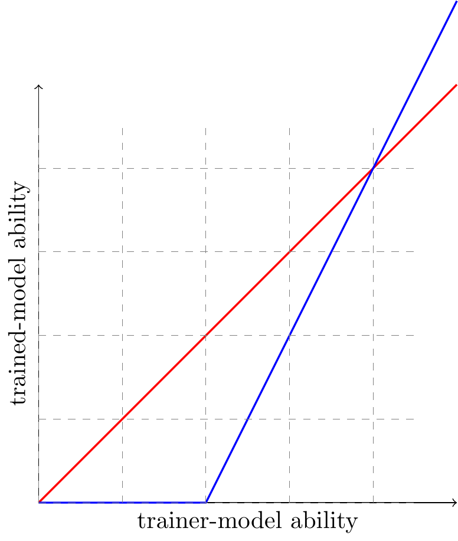
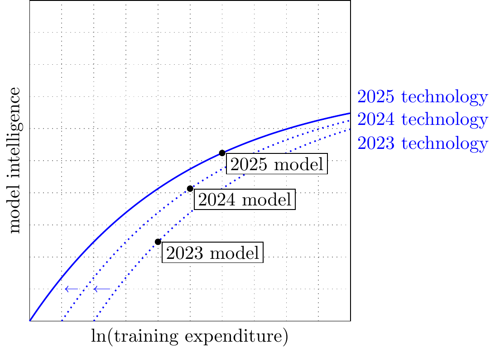

Summary
See also: apple-picking-model
- TL;DR: an explosion is AI capabilities is possible but it’s intrinsically difficult to forecast.
-
Define an explosion as a significant acceleration of the historical rates of progress in AI, e.g. measured by effective compute required for a given level of accuracy (e.g. perplexity).
- Progress in AI is rapid but smooth.
-
We can measure progress in various ways, algorithmic progress has accelerated over the last 10-15 years. Epoch estimate that algorithmic efficiency has been growing at 3X/year between 2012-2024, measured by effective compute.
- In late 2025, forecasters expect an 8-20% chance of an explosion.
-
From the METR/FRI survey: they define an explosion as a 3X speedup in the historical rate of progress by some measure.
- AI has already been accelerating AI research.
-
AI has been self-accelerating for decades: 1. Automatic differentiation; 2. Bayesian optimization of hyperparameters; 3. Neural architecture search; 4. LLM coding autocomplete and chatbots; 5. LLM coding agents.
- There’s good theoretical reason to expect an explosion.
-
(…)
- AI usefulness for optimization depends on features of the setup.
-
Hassabis says AI will make progress wherever there’s (1) combinatorial search space; (2) clear feedback; (3) lots of data or an automatic validator.
However there’s clearly a fourth condition: that the data has some lower-dimensional latent structure. There are many problems that satisfy the first 3 but where we don’t expect substantial progress from autonomous NNs: (A) the telephone book; (B) mapping out stars in the sky; (C) documenting the genome.
- AI speedups depends on the shape of the landscape.
-
(abc)
- AK model of recursive growth.
-
Suppose we have \(Y=AK^\alpha\), and also we use some share \(s\) of output on R&D, which increases productivity \(A=sY^\beta\).
If \(\beta+\alpha>1\) we get a continuously increasing growth rate. Aghion, Jones and Jones (2017) elaborate on this model, where AI gradually is able to take over human tasks, & they get a similar condition.
The critical question is whether the returns to R&D effort are sufficiently steep. Some classic papers: Bloom et al. “are we running out of ideas”; and Erdil.
Trainee:Trainer Curves
Q: what evals would be useful in learning about RSI? Suppose we can plot the following:
We could plot data from a variety of different experiments on this plot, & ask some interesting questions:
- At what time horizon do we forecast models beating human-level ability at training models?
- Do we see grokking, i.e. discontinuous jumps in model-training ability?
- Are some models better than others at model-training?

Toy model of AI stack
See also posts/2026-02-10-model-of-labs.qmd
- Model A: Chinchilla. You just choose model size.
-
- One choice variable: model size (holding compute fixed, this trades-off against training runs).
- You can do some low-cost derisks, but extrapolating to a large compute scale is imperfect.
- Convex but expensive to evaluate.
- Model B: algorithm search.
-
- Each algorithm is a mapping from compute->loss, and you can summarize it with a scalar efficiency (just like nanoGPT).
- medium-cost evaluation; non-convex.
- Model C: training data.
-
- There’s a distribution of tasks, with probability f(t).
- An LLM is just a lookup table, you slowly expand coverage, collecting a larger fraction of tasks t.
- Model D: layer cake.
-
You have a function that turns money->intelligence, & that function gets more efficient over time, it’s falling at about 8X/year.
You can separate the optimization problem into layers, they are partially separable:
- GPU design
- Model architecture
- Pretraining optimizer
- Pretraining data
- Posttraining algorithm (RL)
- Posttraining data
- Elicitation/harness
The cost of an experiment is different for different parts. Some parts scale additively (GPU design), other parts its hard to predict effect of scale (architecture). If they scale additively then the cost of experimentation is small (but expenditure could still be large).

I think this picture gives a reasonable summary of the orthodox picture of LLM progress:
- Technology is getting 3X more efficient each year (blue curves shifting left)
- Training compute is increasing around 3X/year (black points shifting right)
Some notes:
- These growth-rate numbers are very ballpark, lots of disagreement.
- The technology curve includes anything that changes the mapping of training expenditure to intelligence: declines in GPU cost, advances in algorithms, accumulation of training data, and progress in elicitation.
- There’s no consensus on how to measure the y-axis (“model intelligence”). For many questions it actually doesn’t matter as long as we have an ordinal measure (i.e. we can reliably rank model intelligence). However for RSI it matters.
- Labs are probably spending relatively more on R&D (shifting the blue curve left/up) than on training (shifting the black points right). E.g. Epoch estimate that OpenAI is spending much more on salaries & experiments than on frontier model training.
- Gundlach et al. (2025) argue that the true technology curves are steeper, and shifting left much more slowly. Thus algorithmic progress is relatively less important, and most progress is coming from pure scale.
| annual growth (log) | worker exp. | experiment exp. | scale-free? | |
|---|---|---|---|---|
| GPU design | 0.3 | - | - | ✅ |
| Model architecture | 0.3 | $0.5B | $2B | ❌ |
| Pretraining optimizer | 0.3 | $0.5B | $2B | ❌ |
| Pretraining data | 0.3 | $0.5B | $0.5B | ❌ |
| Posttraining algorithm (RL) | 0.3 | $0.5B | $0.5B | ❌ |
| Posttraining data | 0.3 | $0.5B | $0.5B | ✅ |
| Elicitation/harness | 0.3 | $0.5B | $0.1B | ✅ |
| TOTAL | 2.1 (8X) | $3B | $6B |
- Q: what determines the share spent on salary-vs-experiments?
-
- Not just determined by the cost of experimenation. Even if experiments were cheap, you might want to spend a lot on them, because you’re bottlenecked on .
- Random landscape → more experiments. If each alternative is a completely random draw, then there’s no returns to thinking harder.
- Regular landscape → more experiments. Some landscapes are known to be regular, so you can just set a well-known optimization algorithm against them, and spend all your budget on collecting more datapoints, rather than tuning the algorithm. E.g. hyperparameter tuning.
- Structured landscape → more thinking. If the landscape has some latent structure, that requires deep reflection, then we’d expect relatively higher payoff to thinking.
- Q: where is AI likely to help?
-
- At each layer we have production functions Y(W,E).
- Which parts of
- Visualization: show layers, shows recursive effects.
-
- Visualization: plot intelligence(expenditure).
-
Plot intelligence(expenditure), and show the function shifting left by 3X/year (efficiency)
Show points over time: contribution from scale vs efficiency.
Also plot theory that the curvature changes, so the efficiencies only show up at higher scale.
Plot the difference between open & closed models.
(you could remove the model-training part entirely & just say cumulative R&D gets you to a certain level of model intelligence)
data on expenditure
- Epoch, Can AI Companies Become Profitable
-
They estimate GPT-5 cost $3B compute, $1.5B salaries, $0.3B data [1] - Josh You / Epoch (Oct 2025) “Most of OpenAI’s 2024 compute went to experiments”
-
- $5B total research compute
- $0.5B = GPT-4.5 training run
- $4.5B = experiment compute
estimates of efficiency growth
- Anson Ho (Feb 2026): 10X/year.
-
https://epoch.ai/gradient-updates/the-least-understood-driver-of-ai-progress
“So here’s my best guess: after accounting for all training compute (including post-training), I think we’re seeing software progress at around 10× per year, and my 80% credible interval would probably range from 2× to 50× per year.
- Steven Byrnes: 30%/year.
-
https://www.lesswrong.com/posts/sGNFtWbXiLJg2hLzK/the-nature-of-llm-algorithmic-progress-v2
“apart from [transformers] the field has produced probably <10× of training efficiency improvements in this category in the entire period from 2018 to today (≈30%/year).”
- Parker: GPT-2 improvement 700X, 2019-2026.
-
- Current nanogpt SOTA is 707x faster (2.5X/year)
- 15x faster FLOP per second (on fixed hardware) (1.5X/year)
- 46x less FLOPs to reach the same val loss (1.7X/year) https://x.com/whitfill_parker/status/2028515815268491592
- NanoGPT: 30X improvement.
-
https://github.com/KellerJordan/modded-nanogpt - 05/28/24, 45 minutes - 02/16/26, 1.5 minutes - Factor of 30, so 5 doublings, over 21 months, so doubling every 4 months. - 30X lower wall-clock, 26X fewer tokens used.
Karpathy says his 2024 nanoGPT costs ~$20 to train the model to get GPT-2 .
https://github.com/karpathy/llm.c/discussions/481
A contemporary blog post estimates GPT-2 training at $50K:
https://medium.com/%40vanya_cohen/opengpt-2-we-replicated-gpt-2-because-you-can-too-45e34e6d36dc
Original @ https://github.com/openai/gpt-2
Karpathy: “Let’s reproduce the GPT-2 (124M) in llm.c (~4,000 lines of C/CUDA) in 90 minutes for $20.”
- Gundlach et al. (2025) [“On the Origins of Algorithmic Progress in AI”][def16].
-
“Our results indicate that algorithmic progress for small models has been far slower than previously assumed, and that measures of algorithmic efficiency are strongly reference-dependent.
(note it’s unclear whether it’s model size or model training compute).

Their figure says the Transformer accounted for 2/3 of the compute-efficiency wins since 2017.
Estimates over 2012-2023:
- 21,000X total (250%/year)
- 100X at small scale
- Thompson et al. (2022) “The Importance of (Exponentially More) Computing Power”
-
“we assemble direct quantitative evidence of the impact that computing power has had on five domains: two computing bellwethers (Chess and Go), and three economically important applications (weather prediction, protein folding, and oil exploration). Computing power explains 49%-94% of the performance improvements in these domains.

Other Peoples’ Models
| Model | Better summary | Why this is the right box |
|---|---|---|
| Aghion, Jones, and Jones (2019) | Task-based automation in both goods production and idea production. | They first model automation of goods tasks, then explicitly extend the same task-based setup to research tasks; in the strong-form limit, AI replaces people in idea production. |
| Davidson (2021) | Strong-substitution / “virtual worker” framing: AI substitutes very effectively for labor in production and R&D. | The report’s clean toy case is the AI-robot / virtual-worker view, where AI is close to a full substitute rather than a narrow partial-task model. |
| Erdil et al. (2025) | Economy-wide task automation on extensive and intensive margins. | GATE’s automation module maps compute into both which tasks AI can do and how many digital workers can do them. (arXiv) |
| Davidson et al. (2026) | Partial automation of research tasks in a networked multi-sector R&D system; goods-task automation is also present in the calibrated economy. | Their core mechanism is not just “AI researchers replace humans”; it is automation that offsets diminishing returns and amplifies cross-sector spillovers. |
| B. F. Jones (2025) | AI performs some share of R&D tasks and/or becomes more productive at those tasks; bottlenecks determine the payoff. | Jones explicitly separates task share, AI productivity advantage, and bottlenecks, so this row spans both automation and productivity-uplift interpretations. |
| Kokotajlo et al. (2025) | Stagewise automation of AI R&D: coding first, then research taste / direction-setting; eventual full automation at SAR. | The model splits AI software/hardware R&D into many tasks; automation changes AI-R&D inputs, and later stages automate “research taste.” |
| Kwa (2026) | Subset automation of AI R&D tasks with Amdahl-law speedup on the remaining human bottleneck. | Humans do only the non-automated tasks; speedup is (1/(1-f)); the simple model deliberately excludes full automation. |
| Mechanism | Best examples | Comment |
|---|---|---|
| AI replaces R&D workers outright | Davidson (2021); late-stage AI Futures; strong-form Aghion et al. | This is the strongest substitution story: AI is effectively a researcher/worker replacement, not just a helper on some tasks. (Coefficient Giving) |
| AI automates a subset of general tasks | Aghion et al. (goods side); GATE; parts of Davidson et al. | This is the macro/task-automation framing: AI gradually expands over the economy-wide task space. (NBER) |
| AI automates a subset of R&D tasks | Aghion et al. (ideas side); Davidson et al.; Ben Jones; AI Futures; Kwa | This is the most common recent takeoff / AI-growth mechanism. (NBER) |
| AI increases productivity of R&D workers | Ben Jones (fixed-task productivity gains); Besiroglu, Emery-Xu & Thompson (2024); early-stage AI Futures coding automation | This is the complementarity / uplift box, where AI raises progress per dollar or per researcher without immediately replacing everybody. (Kellogg School of Management) |
| AI replaces low-quality R&D workers first | No clean formal model among these; closest is AI Futures’ top-vs-median milestone language | I would leave this as “not really modeled yet” rather than force one of these papers into the box. AI Futures comes closest rhetorically, but it is not a true heterogeneous-worker replacement model. (AI Futures) |
| Other mechanisms | AI improves research taste (AI Futures); increases digital-worker supply per automated task (GATE); raises cross-sector spillovers (Davidson et al.); raises R&D capital intensity (Besiroglu et al.) | These are important because they are not just “more tasks automated”; they change the mapping from capability to research output. (AI Futures) |
Davidson et al. (2026)
\[ \begin{aligned} \dot{S}(L,C) &= a [R(L,C)]^\lambda S^{1-\beta} && \text{(Software L.O.M)} \\ R(L,C) &= (bL)^\alpha (cC)^{1-\alpha} && \text{(Research Input)} \\ L &= dS && \text{(Cognitive Labour)} \end{aligned} \]
Kokotajlo et al. (2025)
“Davidson and Houlden focuses primarily on trends of how much more efficiently AIs have been able to achieve the same performance when determining whether there will be an SIE. Meanwhile, we focus on estimates of the quality of AIs’ research taste, i.e. how good the AI is at choosing research directions, selecting and interpreting experiments, etc. We think that focusing on research taste quality is a more useful lens from which to view a potential SIE. If there’s an SIE we expect that it will primarily be driven by improvements in research taste.”
Agrawal, McHale, Oett (2018) FINDING NEEDLES IN HAYSTACKS: ARTIFICIAL INTELLIGENCE AND RECOMBINANT GROWTH
Agrawal, McHale, and Oettl (2019)
“Our focus is different from these papers in that instead of emphasising the potential substitution of machines for workers in existing tasks, we emphasise the importance of AI in overcoming a specific problem that impedes human researchers – finding useful combinations in complex discovery spaces.”
Also see Agrawal, Gans, and Goldfarb (2023).
charts
flowchart LR RD["R&D"] --> algorithms RD_compute["R&D compute"] --> algorithms algorithms --> intelligence compute --> intelligence data --> intelligence intelligence -->|??| economic_value["economic value"] intelligence -->|??| algorithms
flowchart LR humans["R&D workers"] --> RD RD["effective R&D labor"] -->|b| algorithms algorithms --> intelligence compute -->|a| intelligence intelligence -->|c| RD
Davidson, Halperin, Houlden, Korinek (2025) “When Does Automating Research Produce Explosive Growth?”
Summary: once you automate a sufficient number of tasks (i.e. do them with capital) then this will kick-off an intelligence explosion.
- Basic model:
- If \(\dot{S}_t=S_t^{1-\beta}\), so you get explosion if \(\beta<0\), steady-state growth if \(\beta=0\), and gradual slowing if \(\beta>1\).
- Now if you start automating inputs, the effective exponent gradually gets higher.
- Multi-sector version.
- You gradually automate some of the things, so they can be done with capital.
- You have spillovers between different processes.
- Estimates of \(\beta\):
- Bloom overall \(\beta=3\)
- For software R&D they estimate \(\beta=3\)
- they say in software \(\beta=0.1\)
- Questions:
- Any historical domain where we’ve seen regimes of \(\beta<0\)?, & so explosion.
My observations:
Q: how to think about the growth effect of uplift vs automation?
It seems to me AI typically makes things effectively free, rather than being bottlenecked by capital. I think this is a problem for Cobb-Douglas production.
AI futures model
https://www.timelinesmodel.com
They assume AI automates some fraction of R&D tasks, proportional to the time horizon.
tkwa model
Short: AI automates some fraction of R&D tasks, which causes an effective multiplier on R&D labor: “parallel uplift and 1/(1-f) are equivalent in the simple model”.
https://github.com/tkwa/ai-takeoff-model/blob/main/notes.md https://www.lesswrong.com/posts/uy6B5rEPvcwi55cBK/research-note-a-simpler-ai-timelines-model-predicts-99-ai-r
\[\begin{aligned} S'(t) &= R(t) S^{1 - \beta} = \left(\frac L {1-f}\right)^\alpha C^\zeta S^{1 - \beta}\\ f(t) &= \sigma(v(\log C(t)S(t) - \log E_{hac})) \end{aligned} \]
My simpler version:
\[\begin{aligned} \dot{S} &= L^\alpha C^\gamma S^{1-\beta} \\ \end{aligned} \]
We can show:
\[S^{\beta} = S_0^{\beta} + \frac{\beta\,L_0^\alpha C_0^\gamma}{\alpha g_L+\gamma g_C}\Big(e^{(\alpha g_L+\gamma g_C)t}-1\Big).\]
In the limit we get \(g_s=\frac{\alpha g_L+\gamma g_C}{\beta}\)
flowchart LR
subgraph Inputs["Inputs"]
L["Labor<br/>(growing 2×)"]
C["Compute<br/>(growing 3×)"]
end
subgraph RnD["AI R&D"]
E["Efficiency<br/>(growing 5×)"]
end
subgraph Capabilities["Capabilities"]
EC["Effective<br/>Compute"]
TH["Time Horizon"]
end
subgraph Feedback["Feedback Loop"]
A["Automation"]
end
L -->|"α = 0.25"| E
C -->|"ζ = 0.6"| E
E -->|"β = 0.5<br/>(self-improving)"| E
C --> EC
E --> EC
EC --> TH
TH -->|"ν = 1/3"| A
A -->|"augments"| Lflowchart LR
labor --> algorithms
RD_compute["R&D compute"] --> algorithms
algorithms --> intelligence
training_compute --> intelligence
data --> intelligence
intelligence -->|??| economic_value["economic value"]
intelligence -->|??| RDJones model
Basic model with accumulating ideas: \[\begin{gathered}\dot{A}=R^{\gamma}\\ \xymatrix{*++[F]{R\&D} \ar[r] & *++[F]{\Delta knowledge}\ar[r] & *++[F]{knowledge}} \end{gathered} \]
Model with shoulders/armpits of giants (Jones model):1 \[\begin{gathered} \dot{A}=R^{\gamma}A^{1-\beta}\\ \xymatrix{*++[F]{R\&D} \ar[r] & *++[F]{\Delta knowledge}\ar[r] & *++[F]{knowledge}\ar@/^2em/[l]} \end{gathered} \]
Recursive self-improvement, where knowledge actually helps R&D: \[\begin{gathered} R=A^{\kappa}\\ \dot{A}=A^{1-\beta+\kappa}\\ \xymatrix{*++[F]{R\&D} \ar[r] & *++[F]{\Delta knowledge}\ar[r] & *++[F]{knowledge}\ar@/^2em/[l]\ar@/^3em/[ll]} \end{gathered} \]
- Extrapolating from these models.
- It’s dangerous to talk about “the elasticity” between A and B: it is meaningful to talk about the elasticity at a given point but it’s a strong functional-form assumption that it’ll have the same elasticity everywhere.
- Mathematical assumptions on intelligence -> R&D:
-
- Full automation. Once you hit a threshold of intelligence then it’s worth entirely replacing humans with agents. E.g. replacing tollbooth operator with automatic tollbooth.
- Partial automation. There’s some subset of tasks, and you replace them one-by-one.
- Speedup. -> Humans and agents are complements, an agent increases efficiency on all tasks.
- Concrete assumptions.
-
- Autonomous algorithm-search machine. You spend a lot of tokens, it autonomously learns to navigate the space. Like AlphaZero, trained from scratch.
- Speeds up routine tasks. The AI R&D guy can do certain things quicker, e.g. parse logs, write visualization, fix bugs.
- Shares knowledge. Can learn tricks. It doesn’t affect people at the frontier very much.
- Q: what if the capability frontier is the data frontier?
-
- Nice prediction: will not speed up experts, only behind the frontier.
- Natural processes often have explosive regions.
- You
References
- FRI/METR forecasts of AI progress.
- (…)
- Kortum (1997) “Research, Patenting, and Technological Change”
-
He assumes that technological progress comes from taking random draws from a distribution (undirected search). Then growth over time will be characterized by the extreme value distribution of the underlying distribution, & returns to experience will depend on the thickeness of tails. Alternative assumptions:
- Bounded: growth slows as it approaches a ceiling.
- Exponential (thin tails): \(A=\ln n\)
- Pareto (thick tails): \(A = n^\gamma\)
Note: (1) I think this will imply lumpy growth; (2) this misses out the Jones shoulders-of-giants effect.
- Erdil, Besiroglu, Ho (2024) “Estimating Idea Production: A Methodological Survey”
-
They discuss the difficulty of estimating the returns to R&D on productivity across a few different domains. They have nice estimates for chess inputs & outputs. They also estimate algorithmic progress:
- Computer vision: doubling time 9 months 2012-2022.
- RL sample efficiency: doubling time 11 months, 2015-2019.
- SAT solvers: doubling time 2 years, 1997-2018.
- Linear programming: doubling time 6 years, 1998-2018.
They include a nice derivation of the critical threshold for hyperbolic growth:
\[\begin{aligned} Y &= AK^\alpha \\ \dot{K} &\propto Y && \text{(constant savings rate)}\\ \dot{A}/A &\propto A^{-\beta}K^\lambda && \text{(productivity growth)} \end{aligned}\]
You’ll get steady-state growth if and only if \(\lambda/\beta+\alpha=1\). You’ll get hyperbolic growth if \(\lambda/\beta+\alpha>1\).
- Aghion, Jones, and Jones (2019) “Artificial Intelligence and Economic Growth”
- They give conditions under which automating R&D will cause an explosion in GDP growth (i.e. a steadily increasing rate of growth, AKA hyperbolic growth).
- David Owen (2024) “Automation of AI R&D: Researcher Perspectives”
- .
- Eric Drexler (2025) “The Reality of Recursive Self-Improvement”
-
Automating steps in the optimization loop:
- Automating differentiation.
- Neural architecture search.
- Bayesian optimization.
“The fundamental mechanism is systemic friction reduction — aggregate improvements expand possibilities by enabling faster progress and more ambitious goals
“In hyperparameter optimization, advances in Bayesian and multi-fidelity methods often achieve order-of-magnitude savings compared to naive grid search. What once required thousands of full model trainings can now be accomplished with fewer and more intelligent probes. As daunting costs of innovation fall, research becomes faster and more ambitious.
“The trajectory toward comprehensive AI capabilities makes these developments predictable, not in detail, but in outline.
Overflow / Offcuts
- How important is scale?
-
- Benchmarking Optimizers for Large Language Model Pretraining
- They compare 10 optimizers which are alternatives to AdamW, & shown to beat it in some circumstances, and find that 3/10 beat it.
“Methods that perform well in short speedruns might not be optimal for longer training horizons”
- Figure 1 shows only 3/10 optimizers outperform AdamW at scale.
- Terrance Tao / optimization problems.
- https://github.com/teorth/optimizationproblems?tab=readme-ov-file They list 7 cases of “recent progress”, 3 of them are explicitly LLM-assisted or LLM-generated.
metaphors for RSI
- Drawing balls from an urn.
- There’s some distribution of values, then you get a very nice expression. The expected value of \(N\) draws just depends on the extreme value distribution of \(f(v)\). This is exactly Kortum (1997).
- A tool factory makes better tools.
- I think this is Jones’ metaphor. Distinct from Kortum, because the returns to search now depends on the stock of ideas.
- Machine tools and regular tools
-
- The Dutch make machine tools.
- The machine tools make regular tools.
- The regular tools make products.
At some point the machine tools become good enough to make themselves, but it’s a discrete jump.
- Lego - combining ideas.
- Weitzmann’s recombinant search is like this: you combine ideas to make new ideas, now you have a larger stock of ideas to combine.
- Recipes.
- You try out recipes, which are combinations of prior recipes. C. I. Jones (2023) – something like a reconciliation of Weitzman & Kortum.
- Blacksmith.
-
You have a hammer and you spend time making horseshoes, or working on a new hammer.
A harder hammer both (1) makes horseshoes faster, or (2) makes your hammer still harder.
We need more bottom-up modelling of AI’s economic effect [UNFINISHED]
- There are two approaches to modelling AI’s effect.
-
From a lot of conversations about recursive self-improvement I realized it’s useful to distinguish between two qualitatively different ways of thinking about AI’s ability to do work:
- Top down: AI replaces each of the human subtasks.
- Bottom-up: AI just does the entire procedure from first principles.
I think 80% of discussion of economic impacts was of the top-down type.
- What would bottom-up modelling look like?
- There are some papers with “model organisms” of recursive self-improvement: Grefenstette (1986) genetic algorithm to learn parameters for genetic algorithsm; AutoML-Zero (2020); Schmidhuber (2003) Godel Machines.
- What are the implications for recursive self-improvement?
- AI treats it as a pure optimization problem, already it’s better at chip design, algorithm design.
- Some related discussion:
-
Nathan Lambert recapitulates some discussions from the Curve about recursive self-improvement here.
This is related to the Bresnahan/systems view of AI. He talks about the first wave of ML models: “The transition to ICT-based production has largely proceeded at the production system level, not the task level.”2
History of Optimization
- Some optimization landscapes that were already conquered.
-
- People used to compile tables by doing manual calculations – digits of pi, values for pi, tolerance ranges of metals, random numbers.
- Simplex optimization – very many optimization problems can now be brute-forced. We already knew the algorithms, but it was slow to compute by hand. E.g. simplex.
- (see a ChatGPT literature review I made on 2026-01-04)
| Domain / Problem | Pre-computer human method (what people did before; typical scale) | Computer-era breakthrough (year + system/organization) | What changed (order-of-magnitude scale/speed; new capability) | Key sources (2–3) |
|---|---|---|---|---|
| Census tabulation (large-scale counting & cross-tabs) | Manual tally sheets + hand addition; limited ability to do many cross-tabulations; 1880 U.S. census tabulation famously took >8 years | 1890: U.S. Census Bureau adopts Hollerith punched‑card electric tabulators | Mechanized “brute-force counting” (sort + count across huge card decks); basic totals moved from years to months; punched‑card tabulation became routine for decades (into the 1950s) | U.S. Census Bureau on Hollerith tabulation (Census.gov); IBM “Punch cards” history & 1880 vs 1890 timing (Wikipedia); Census.gov history note on long use into 1950s (Census.gov) |
| Cryptanalysis: Enigma daily key recovery (systematic key search under constraints) | Human cryptanalysts built hypotheses (“cribs”), did hand checks / desk-calculator work; throughput limited and time‑sensitive | 1940: Bletchley Park deploys the (British) Bombe (Turing/Welchman concept; electro‑mechanical search) | Turned a largely manual, fragile workflow into a mechanized search over Enigma settings consistent with a crib—key recovery became operationally scalable (when cribs/traffic conditions allowed) | NSA history of the cryptanalytic bombe ; National Museum of Computing “Bombe Machine” |
| Cryptanalysis: Lorenz SZ40/42 (“Tunny”) wheel-setting search | Before Colossus, attacks relied on laborious statistical/correlation work with earlier aids + significant human effort | 1944: Colossus at Bletchley Park (Tommy Flowers / Post Office Research Station), programmable electronic machine for Tunny analysis | High-speed automated counting/correlation tests greatly accelerated wheel-setting searches and made the method operational at wartime scale (often described as the first programmable electronic computer) | National Museum of Computing “The Colossus Computer” (Investors.com); National Museum of Computing “Colossus: the world’s first programmable computer” (Computer Science) |
| Operations research: Linear programming (LP) optimization (simplex) | Desk calculators + accounting machines; even “toy” LPs were expensive—e.g., the 77‑variable diet LP took ~120 person‑days on desk calculators | 1952: Project SCOOP (USAF/DoD context) uses UNIVAC in the Pentagon era to run LP; early practitioners report solving problems with hundreds of variables/constraints | LP becomes a “push-button” computational optimization workflow rather than a bespoke hand calculation; feasible problem sizes jump from tens to hundreds (and later far more) | Dantzig biography (desk calculators/IBM accounting equipment context) ; Gill note on 77‑variable diet LP taking ~120 man‑days by hand ; Saul Gass interview recounting UNIVAC’s 1952 arrival + early LP scale (e.g., 250 eqns/500 vars) |
| Operations research: Integer programming via cutting planes (exact discrete optimization) | Small integer decisions often handled by hand enumeration or ad hoc reasoning; scaling was rapidly prohibitive | 1958–1960: Ralph Gomory (RAND) introduces/implements cutting‑plane methods; early work implemented on IBM 704 | Created a systematic exact method: solve LP relaxations, generate valid cuts, iterate—turning discrete optimization into a repeatable computational procedure | Gomory’s 1958 “algorithm for integer solutions to linear programs” ; Gomory retrospective noting IBM 704 + FORTRAN implementation (summer 1958) ; RAND report on mixed‑integer algorithm (1960) |
| Combinatorial optimization: TSP solved to optimality at modern scale (branch‑and‑cut) | Humans could do only small instances exactly; early exact “proof” instances were dozens of cities (often with special structure/hand work) | 2005–2006 (computation reported): Concorde branch‑and‑cut solves pla85900 (85,900 cities) to optimality; formal certification described in later paper | Exact TSP moves from tens/hundreds → tens of thousands with machine‑checkable certificates; “exact + certified” becomes routine for benchmark sets (TSPLIB) | Concorde project page (largest TSPLIB solved = 85,900) ; pla85900 page (2005/06 computation context) ; Applegate et al. on certifying optimality for 85,900‑city TSP |
| Combinatorial search: SAT / automated theorem proving (DPLL/DP → modern CDCL) | Human proof search/case analysis; limited scale for complex logical formulas and circuit constraints | 1960: Davis–Putnam procedure framed for machine proof search; 2001: Chaff delivers 1–2 orders‑of‑magnitude speedups vs prior complete solvers | SAT becomes a practical “black-box” combinatorial search engine; real instances from verification can reach millions of variables / clauses | Davis & Putnam (1960) original procedure PDF ; Chaff paper reporting 1–2 orders‑of‑magnitude speedups ; Zhang et al. noting verification instances with millions of variables/clauses |
| Mathematical case analysis: Four‑color theorem (finite unavoidable set + reducibility checking) | Purely human proofs stalled for a century; manual reducibility checking did not scale to the needed case set | 1976–1977: Appel & Haken (Univ. of Illinois) complete the proof by reducing to a large finite set and checking reducibility by computer (papers published 1977) | Enabled exhaustive checking of thousands of configurations—often cited as the first major theorem proved with extensive computer assistance; counts reported vary (e.g., 1,936 vs later 1,482) | Illinois exhibit overview (timeline + “finite but large number of cases” + computer role) ; Appel–Haken Part I (1977) paper (primary) ; note on 1,482‑member unavoidable set (secondary) |
| Scientific least squares / estimation: orbit determination & trajectory prediction | “Human computers” using desk calculators (e.g., Friden-era workflows) integrated trajectories and iteratively corrected orbits from tracking data—slow and labor intensive | Early 1960s: Project Mercury uses IBM 7090 for trajectory computation and real‑time tracking/prediction; 1963 report documents orbit‑determination/prediction programs; JPL deep‑space navigation evolves orbit determination programs | Orbit estimation becomes fast enough for mission operations (frequent updates, higher data volume, more systematic differential correction/least‑squares style pipelines) | IBM history on Mercury using 7090s for trajectory parameters + real‑time tracking/prediction ; NASA/NTRS “Orbit Determination and Prediction, and Computer Programs” (1963) ; JPL navigation history (orbit determination program evolution) |
| Cryptanalysis: DES exhaustive key search (demonstration attack) | By hand, exhaustive search is impossible; early “massive software” efforts showed feasibility but still took many days | 1998: EFF builds DES Cracker (“Deep Crack”) hardware; cracks RSA’s DES Challenge II in <3 days; built for < $250,000 | Made brute‑force key search demonstrably practical/affordable; shifted the security narrative for DES and reinforced the need for stronger standards | EFF project page (cost < $250k; <3 days; beat 39‑day prior record) ; Cracking DES book (technical design + purpose) ; NIST AES development history citing EFF’s “Cracking DES” |
| Game solving: Checkers (exhaustive retrograde analysis + proof search) | Human masters analyzed openings/endgames, but no proof of the game-theoretic value; endgame knowledge limited to manageable subsets | 2007: Schaeffer et al. (Chinook / Univ. of Alberta) announce checkers is solved (perfect play → draw) using retrograde analysis and related proof techniques | Replaced human analysis with a computer‑verified solution and large computed databases; established a definitive game-theoretic result | Science “Checkers Is Solved” (primary) ; hosted PDF copy (same article) |
| Game-tree search: Chess (Deep Blue) | Humans explored variations mentally; even strong humans can’t enumerate anywhere near machine scale; early engines were far weaker due to limited search | 1997: IBM Deep Blue defeats Kasparov; architecture combines parallelism + custom chess chips; reports include ~200 million positions/sec scale | Brute-force/alpha–beta style search at massive throughput became sufficient for world‑champion performance, making deep tactical exploration routine for machines | IBM history page (200M positions/sec; brute-force framing) ; Hsu (IEEE Micro, 1999) on Deep Blue chips & system evolution ; Campbell et al. technical overview (Deep Blue system/search rates) |
References
Aghion, Philippe, Benjamin F. Jones, and Charles I. Jones. 2019. “Artificial Intelligence and Economic Growth.” In The Economics of Artificial Intelligence: An Agenda, edited by Ajay Agrawal, Joshua Gans, and Avi Goldfarb, 237–90. Chicago: University of Chicago Press. https://doi.org/10.7208/9780226613475-011.
Agrawal, Ajay, Joshua S Gans, and Avi Goldfarb. 2023. “Do We Want Less Automation?” Science 381 (6654): 155–58. https://doi.org/10.1126/science.adh9429.
Agrawal, Ajay, John McHale, and Alexander Oettl. 2019. “Finding Needles in Haystacks: Artificial Intelligence and Recombinant Growth.” In The Economics of Artificial Intelligence: An Agenda, edited by Ajay Agrawal, Joshua Gans, and Avi Goldfarb, 149–74. Chicago, IL: University of Chicago Press. https://doi.org/10.7208/9780226613475-007.
Davidson, Tom. 2021. “Could Advanced AI Drive Explosive Economic Growth.” Open Philanthropy 25. https://www.semanticscholar.org/search?q=Could%20advanced%20AI%20drive%20explosive%20economic%20growth.
Davidson, Tom, Basil Halperin, Thomas Houlden, and Anton Korinek. 2026. “When Does Automating AI Research Produce Explosive Growth?” https://www.basilhalperin.com/papers/shs.pdf.
Erdil, Ege, Andrei Potlogea, Tamay Besiroglu, Edu Roldan, Anson Ho, Jaime Sevilla, Matthew Barnett, Matej Vrzla, and Robert Sandler. 2025. “GATE: An Integrated Assessment Model for AI Automation.” arXiv Preprint arXiv:2503.04941. https://arxiv.org/pdf/2503.04941.pdf.
Gundlach, Hans, Alex Fogelson, Jayson Lynch, Ana Trisovic, Jonathan Rosenfeld, Anmol Sandhu, and Neil Thompson. 2025. “On the Origin of Algorithmic Progress in AI.” https://arxiv.org/abs/2511.21622.
Jones, Benjamin F. 2025. “Artificial Intelligence in Research and Development.” NBER Working Paper 34312. National Bureau of Economic Research. https://doi.org/10.3386/w34312.
Jones, Charles I. 1995. “R&d-Based Models of Economic Growth.” Journal of Political Economy 103 (4): 759–84. https://doi.org/https://doi.org/10.1086/262002.
———. 2023. “Recipes and Economic Growth: A Combinatorial March down an Exponential Tail.” Journal of Political Economy 131 (8): 1994–2031. https://doi.org/10.1086/723631.
Kokotajlo, Daniel, Eli Lifland, Brendan Halstead, and Alex Kastner. 2025. “AI Futures Model: Dec 2025 Update.” https://blog.ai-futures.org/p/ai-futures-model-dec-2025-update.
Kwa, Thomas. 2026. “Research Note: A Simpler AI Timelines Model Predicts 99% AI r&d Automation in ~2032.” https://www.lesswrong.com/posts/uy6B5rEPvcwi55cBK/research-note-a-simpler-ai-timelines-model-predicts-99-ai-r.
Footnotes
This was introduced by C. I. Jones (1995), where there are diminishing returns to knowledge, whereas Romer (1990) had assumed no diminishing returns to knowledge, \(\beta=0\).↩︎
“My empirical conclusion about these applications is that the lazy idea of AI – that is, of computer systems that are able to perform productive tasks previously done by humans– is irrelevant to understanding how these technologies create value. Here “irrelevant” does not mean that substitution of machine for human tasks is less important than other determinants of the value in use of AITs. It means irrelevant: task-level substitution of machine for human plays no role in these highly valuable systems.”↩︎